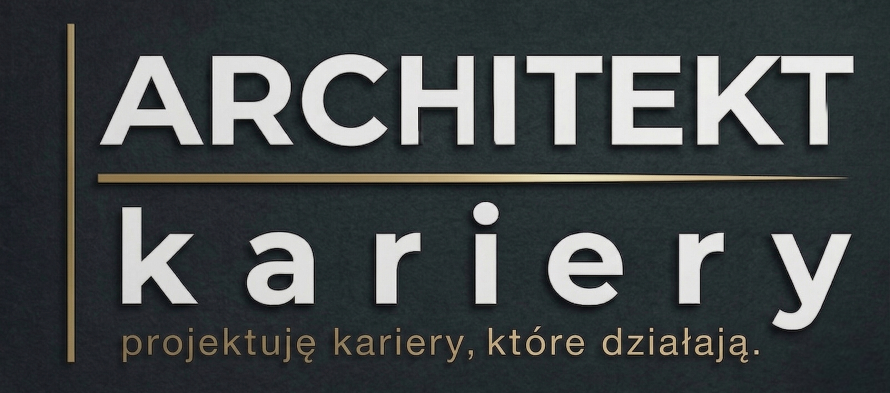

Koniec zgadywania. Koniec stresu z planowaniem przyszłości.
Dostajesz plan, strategię i kogoś kto zna drogę.
5 pytań · 1 minuta · bez zobowiązań
Trzy rzeczy które zatrzymują Cię przed zmianą.
Nie dlatego że jesteś słaby — dlatego że jesteś sam z tym.
Rodzina naciska, rówieśnicy już coś robią, a Ty nadal nie masz pojęcia w którą stronę iść. Normalne. Tu się to kończy.
Wysyłasz CV, brak odpowiedzi. Chodzisz na rozmowy, brak ofert. Problem nie leży w Tobie — leży w strategii.
Masz etat ale czujesz że to nie to. Zmiana = ryzyko. Brak zmiany = ryzyko. Różnica: ze mną znasz swój krok.
"Architekt przejmuje kortyzol procesu.
Ty podejmujesz decyzje na chłodno."
Co konkretnie dla Ciebie robię. Bez ogólników, bez marketingu.
Profesjonalne CV + podstawowe profilowanie
Dla kogo: osoba która wie czego chce, ale jej CV nie działa.
Czas realizacji: 3-5 dni roboczych
Profilowanie + CV + mentoring 10 dni
Dla kogo: osoba która ma kierunek, ale potrzebuje wsparcia operacyjnego.
Czas realizacji: 7-10 dni + 10 dni mentoringu
Kompleksowe profilowanie + mapa + CV + rozmowa 1:1 + mentoring 30 dni
Dla kogo: osoba która chce to mieć z głowy. Raz, porządnie, na lata.
Czas realizacji: 10-14 dni + rozmowa + 30 dni mentoringu
Która usługa jest dla Ciebie?
Odpowiedź w 5 pytaniach poniżej.
Odpowiedz szczerze. Dostaniesz konkret — nie ofertę dla wszystkich.
Po wypełnieniu dostaniesz ode mnie e-mail z konkretną rekomendacją — który pakiet pasuje do Twojej sytuacji i dlaczego. Bez wciskania. Jeśli nic nie pasuje, też Ci to powiem.
Wypełnij formularz →Formularz otworzy się w nowej karcie
Jesteś w ostatniej klasie liceum albo właśnie skończyłeś/aś. Rodzina naciska że "trzeba coś wybrać". Scrollujesz sociale, widzisz że rówieśnicy "coś już robią". A Ty nie masz pojęcia od czego zacząć.
To tu się zaczyna porządek. Ja Ci pokażę w czym jesteś dobry/a, jakie masz opcje i jak się tam dostać. Bez ściemy.
Pracujesz, ale to nie to. Albo nie pracujesz i nie możesz znaleźć. Małe miasto, mało ofert, szklany sufit. Odpowiadałeś/aś na dziesiątki ogłoszeń, nic z tego nie wyszło. Czujesz że jesteś wart/a więcej niż dostajesz.
Mam dla Ciebie strategię, nie motywację. Konkretny plan, liczby, pracodawcy, kalendarz. Brutalnie szczery, ale skuteczny.
Nie jestem kolejnym coachem kariery z Instagrama.
Przez 10 lat budowałem swoją karierę w retailu i zarządzaniu — od doradcy sprzedaży przez trenera po dyrektora sklepu jednej z największych sieci w Polsce. Zespół 180 osób. Budżet za miliony. Rekrutacja setek ludzi.
Wiem co widzi pracodawca czytając Twoje CV w 30 sekund — bo sam to robiłem.
Jestem certyfikowanym coachem (Franklin University). Mam magistra psychologii w biznesie. Znam 5 modeli AI na poziomie zaawansowanym — używam ich żeby moje analizy były głębsze niż jakikolwiek klasyczny coach może zaoferować.
Nie dla pieniędzy. Mam etat który pokrywa moje rachunki. Robię to bo uważam że polski system edukacji i rynek pracy zostawia dorosłych ludzi z chaosem w głowie, a młodych z presją i zero konkretnej pomocy.
Chcę być rozwiązaniem, nie kolejnym problemem.
Uczciwie: z tego chcę zarabiać — bo mam rodzinę i marzenia (w tym mustanga, jeśli już szczerze). Ale moja motywacja to nie biznes — to wpływ.
Jeśli mi pomożesz rozwiązać Twój problem z karierą, to będziemy wspólnie rozwijać ten kraj. Mały krok, ale konkretny.
Cena zależy od tego jakiej usługi potrzebujesz. Wypełnij kwiz (5 pytań, 1 minuta), a dostaniesz spersonalizowaną propozycję z ceną dopasowaną do Twojej sytuacji. Bez pakietów "dla wszystkich", bez ukrytych kosztów.
W 24 godziny. Jeśli Twoja sytuacja jest pilna — możesz to zaznaczyć w kwizie, wtedy odpisuję priorytetowo.
Uczciwe pytanie. Prosta odpowiedź: zanim zapłacisz cokolwiek, dostaniesz ode mnie spersonalizowaną analizę Twojej sytuacji (bezpłatnie, po kwizie). Zobaczysz jak piszę, jak myślę, czy to co proponuję ma sens. Jeśli tak — idziemy dalej. Jeśli nie — żadnej presji.
BLIK lub przelew tradycyjny. Po akceptacji propozycji dostajesz dane do przelewu. Faktura na firmę lub rachunek na osobę fizyczną — jak potrzebujesz.
Link do szczegółowego formularza profilującego (15-70 min zależnie od pakietu) + instrukcję co dalej. Twój dokument / CV / mapa trafia do Ciebie mailem w terminie ustalonym w propozycji.
Nie obiecuję że dostaniesz pracę za 7 dni — nikt uczciwy tego nie obieca. Obiecuję że dostaniesz konkretną strategię, CV pod rynek i wsparcie w trakcie procesu. Skuteczność zależy od Twojego wdrożenia. Jeśli poczujesz że dokument/CV nie odpowiada na Twoją sytuację — napisz, poprawiamy. Nie wysyłam "półproduktów".